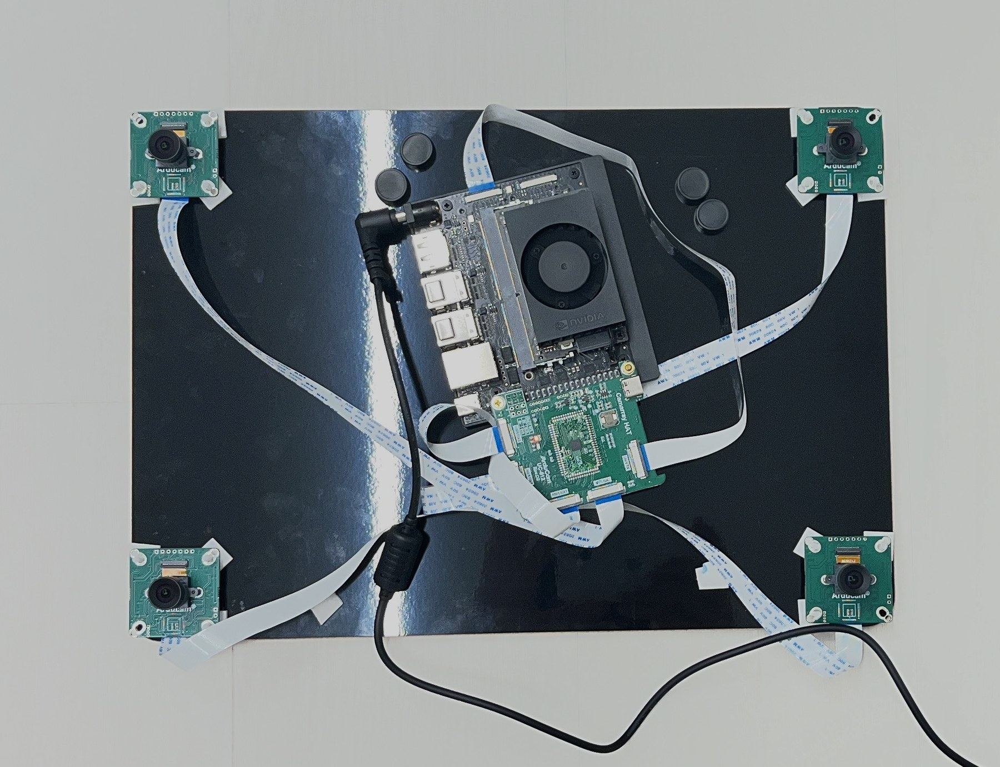
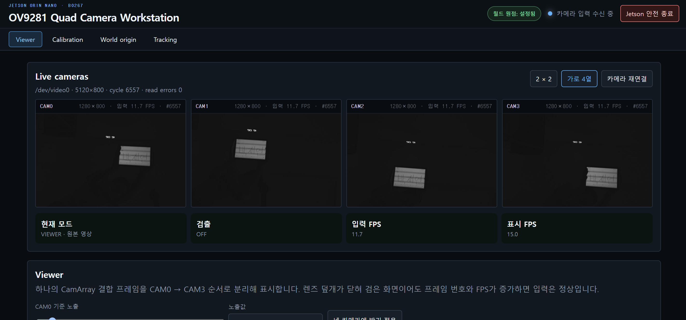
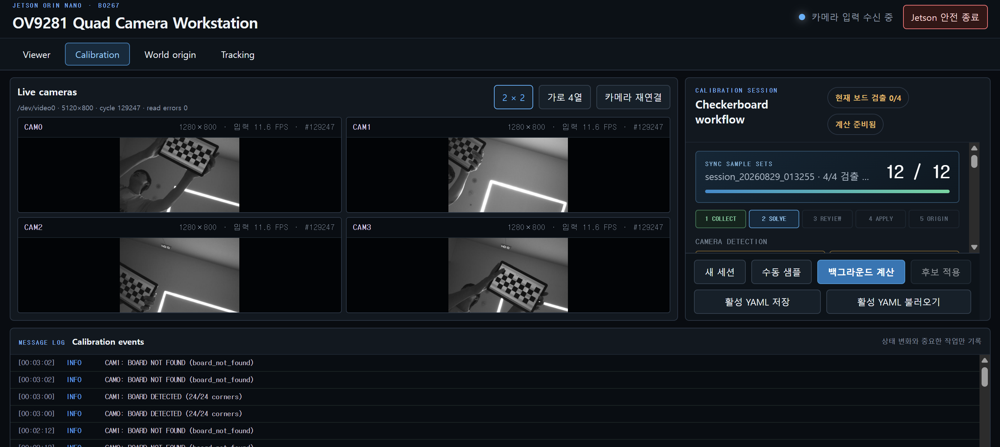
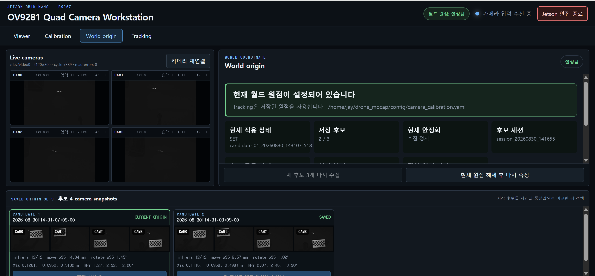
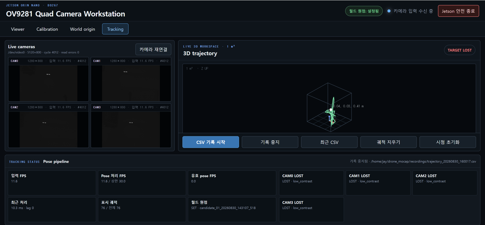

4카메라 모션캡처 시스템 1차 구현
카메라 영상에서 움직이는 물체의 위치를 얻으려면 영상 입력, 카메라 보정, 좌표계 설정과 추적이 같은 기준으로 연결되어야 합니다. Jetson Orin Nano와 OV9281 카메라 4대를 이용해 이 과정을 하나의 웹 프로그램으로 구현했습니다. 현재 추적 대상은 드론이나 LED가 아닌 체커보드이며, 보드를 움직이면 추정된 3차원 위치가 화면에 궤적으로 누적됩니다.
4카메라 영상 입력 → 캘리브레이션 → 월드 원점 설정 → 체커보드 위치·자세 추적 → 궤적 표시·CSV 기록까지 연결한 단계입니다. IR LED 마커 추적, 실제 드론 비행 제어와 기준 장비를 이용한 정확도 평가는 아직 포함하지 않습니다.
1. 영상 입력에서 3차원 궤적까지
모션캡처는 물체의 움직임을 시간에 따른 위치·자세로 기록하는 기술입니다. 한 카메라에서 보드가 오른쪽으로 이동해 보여도, 다른 카메라에서는 왼쪽으로 보일 수 있습니다. 각 영상의 픽셀 좌표를 그대로 합칠 수 없는 이유입니다. 먼저 렌즈와 카메라 배치를 보정하고, 각 카메라의 관측을 공통 좌표계로 바꾼 뒤 시간 순서대로 연결해야 하나의 경로가 됩니다.
- Viewer네 영상이 정상적으로 들어오는지 확인하고 노출을 조절합니다.
- Calibration체커보드를 여러 위치·각도에서 관측해 렌즈 특성과 카메라 사이의 위치·회전을 구합니다.
- World Origin기준 위치에 놓인 보드로 궤적의 원점과 좌표축을 정합니다.
- Tracking움직이는 보드의 위치·자세를 추정하고 3차원 궤적과 CSV로 기록합니다.
크기를 알고 코너를 반복 검출할 수 있는 체커보드는 초기 시스템을 확인하기에 적합합니다. LED 마커를 구분하고 여러 영상 사이에서 대응시키는 문제를 추가하기 전에, 영상부터 좌표 출력까지 이어지는 기반 기능을 시험할 수 있습니다.
2. Jetson과 4카메라 장비 구성
연산 장치는 Jetson Orin Nano 개발 키트이고, 영상 입력은 Arducam B0267 1MP×4 OV9281 CamArray Kit입니다. 네 개의 흑백 글로벌 셔터 카메라를 CamArray HAT에 연결하고, HAT의 출력을 Jetson의 CSI 입력으로 받습니다. 글로벌 셔터는 화면의 행마다 촬영 시점이 달라 생기는 형상 왜곡을 줄입니다. 다만 움직임에 의한 흐림은 노출 시간에도 좌우되므로 별도 조절이 필요합니다.
{kind=link}

초기 준비는 Jetson 펌웨어·운영체제 설정, 실행 중인 커널에 맞는 카메라 드라이버 구성, 영상 장치 인식 순서로 진행했습니다. 아래 사진은 개발 키트 준비와 부팅 환경 구축 당시의 기록입니다. 장비 연결 이후에는 네 영상의 순서가 물리적인 카메라 배치와 일치하는지도 확인해야 합니다.
{kind=link}
{kind=link}
{kind=link}
3. 네 영상을 한 번에 읽는 웹 Viewer
현재 드라이버는 카메라마다 별도 장치를 열지 않고, 네 영상을 가로로 이어 붙인 5120×800 결합 프레임을 제공합니다. 프로그램은 이를 1280×800 영상 네 장으로 나누고 같은 캡처 주기 번호를 부여합니다. 따라서 서로 다른 시점의 프레임을 임의로 묶지 않고, 같은 결합 프레임에서 나온 네 관측을 함께 처리할 수 있습니다. 센서별 하드웨어 타임스탬프로 노출 시차를 실측한 것은 아니므로, 이 구조만으로 카메라 간 물리적 시간 오차가 0이라고 단정하지는 않습니다.
Jetson에서는 FastAPI·Uvicorn 서버가 동작하고, 같은 네트워크의 PC나
스마트폰은 http://<JETSON_IP>:8080으로 접속합니다.
영상은 카메라별 MJPEG로, 모드와 추적 상태는 API로 전달합니다.
Viewer에서는 캘리브레이션 없이도 네 영상, 입력 상태와 노출을 확인할 수 있습니다.
{kind=link}

4. 체커보드로 카메라의 기준 맞추기
캘리브레이션은 영상 좌표와 실제 공간 사이의 관계를 구하는 과정입니다. 현재 설정은 내부 코너 8×3개, 한 칸 간격 23mm인 체커보드입니다. 여기서 8×3은 사각형의 개수가 아니라, 사각형 사이의 교차점 개수입니다. 칸 간격은 출력된 위치의 실제 길이 기준이 되므로, 태블릿에 패턴을 표시한다면 화면 확대율까지 반영해 실제 표시 간격을 확인해야 합니다.
보드를 화면 중앙에만 두는 대신 위치와 기울기를 바꾸어 샘플을 수집합니다. 앱은 코너 검출과 샘플 상태를 표시하고, 수집 뒤 백그라운드에서 보정을 계산합니다. 각 카메라에서는 초점거리·주점·렌즈 왜곡을 구하고, 같은 보드를 함께 본 카메라 쌍에서는 상대 회전과 이동을 구합니다. 이 관계를 연결해 네 카메라를 하나의 기준 카메라 좌표계로 표현합니다. 연결되지 않은 카메라가 남으면 완전한 보정으로 취급할 수 없습니다.
{kind=link}

계산 결과는 검토한 뒤 적용·저장하고 다음 실행에서 불러올 수 있습니다. 재투영 오차는 추정한 카메라 모델로 보드 코너를 영상에 다시 투영했을 때의 차이입니다. 보정 상태를 판단하는 지표지만, 실제 공간에서의 위치 오차를 직접 측정한 값은 아닙니다. 후자는 별도의 기준 장비와 비교해야 합니다.
5. 보드의 기준 위치로 월드 원점 설정
카메라 보정이 끝나도 ‘실험 공간의 어디를 0으로 볼 것인가’는 남아 있습니다. 원점 설정은 기준 위치에 둔 보드의 중심을 원점으로, 보드 평면을 X·Y축으로, 평면의 법선 방향을 Z축으로 정하는 과정입니다. 이 좌표축은 보드의 자세로 정해지며 중력 방향을 별도로 측정해 정렬한 좌표계는 아닙니다.
현재 구현은 네 카메라가 모두 보드를 검출한 관측을 모아 12개 자세를 강건하게 평균합니다. 보드가 흔들리거나 관측 사이의 위치·회전 차이가 크면 품질 검사에서 제외합니다. 스냅샷이 포함된 원점 후보를 최대 3세트까지 저장하고, 사용자가 후보를 확인해 적용합니다. 이미 설정한 원점은 추적 도중 자동으로 바뀌지 않으며 재설정 절차를 거쳐야 합니다.
{kind=link}

추적 중에는 보드의 카메라 기준 자세를 공통 장치 좌표계로 변환하고, 저장된 원점 변환의 역변환을 적용해 월드 좌표를 얻습니다. 원점 아래로 이동한 결과는 음의 Z로 표현될 수 있으며 오류로 잘라내지 않습니다. 카메라 배치가 바뀌면 재보정이 필요하고, 장치 전체가 움직이면 실험 공간의 원점도 다시 확인해야 합니다.
6. 코너 추적, 자세 융합과 3차원 궤적
첫 관측에서는 체커보드 전체를 검출하고, 이후에는 이전 프레임의 코너가 어디로 이동했는지 Lucas–Kanade 광류로 추적합니다. 앞뒤 프레임을 왕복했을 때 코너가 원래 위치로 돌아오는지 확인하고, 보드 평면의 변환 관계에서 벗어나는 대응점을 제외해 잘못 따라간 점을 걸러냅니다.
남은 영상 코너와 실제 보드의 3차원 좌표를 이용해 카메라마다
solvePnP로 보드의 위치·자세를 구합니다. PnP는 크기를 아는
물체의 점들이 영상에서 어디에 보이는지를 이용하는 방식입니다. 각 결과를
공통 좌표계로 바꾼 뒤 관측 품질을 반영해 융합합니다. 이는 LED 점을 여러
카메라에서 대응시켜 광선의 교차로 위치를 구하는 삼각측량과는 다른 구현입니다.
유효한 카메라가 2대 이상이면 융합 결과를 만들고, 3대·4대 관측 상태도 따로 표시합니다. 유효 위치는 시간 순서대로 궤적에 추가되며 화면에서는 회전·확대·이동과 위쪽 시점 전환이 가능합니다. CSV에는 유효 여부도 함께 기록합니다. 표적을 잃었을 때는 이전 좌표를 새 측정처럼 반복하지 않고, 기존 궤적만 남겨 최근까지의 움직임과 현재 검출 실패를 구분합니다.
{kind=link}

모션캡처 동작 데모
영상에서는 카메라 입력과 궤적 표시가 연결되는 동작을 확인할 수 있습니다. 이 데모는 초기 모션캡처 프로그램의 동작 기록이며, 드론 비행이나 정밀 위치 정확도의 검증 영상은 아닙니다.
7. 처리 지연과 원거리 표적 재검출 개선
초기 화면 이후의 개발에서는 프레임마다 보드 전체를 다시 찾는 연산과 불필요한 영상 변환을 줄였습니다. 흑백 GREY 입력을 그대로 처리하고, 입력 프레임을 쌓아 두는 대신 최신 프레임 세트를 유지합니다. 표적을 이미 찾은 카메라는 광류 추적을 이어 가며, 전체 검출은 별도의 재탐색 작업으로 실행합니다. 오래된 프레임에서 얻은 검출 결과는 현재 영상에서 다시 확인한 뒤 자세 계산에 사용해, 늦게 도착한 관측이 갑작스러운 위치 점프를 만들지 않도록 합니다.
가까이서 추적을 시작한 보드는 멀어져도 따라가지만, 처음부터 멀리 있는 보드를 찾지 못하는 문제도 있었습니다. 작은 보드의 대비가 전체 화면 통계에 묻혀 후보에서 제외되는 경로를 수정하고, 관심 영역의 국소 대비와 여러 해상도의 검출을 조합했습니다. 보드 크기에 맞춘 코너 정밀화도 적용했습니다. 실제 약 1m 거리의 밝은 태블릿 표적을 처음부터 검출하는 시험은 추가 확인 대상입니다.
| 2026.08.30 시험 | 확인 결과 | 해석 범위 |
|---|---|---|
| 실시간 처리 경로 | 약 15초 구간에서 약 45세트/초 처리 | 4개 미리보기·상태 조회·CSV 동시 실행. 보드가 없는 장면이므로 유효 자세 45FPS의 증거는 아님 |
| 저장 이미지 재생 | 450세트 중 446세트 유효 융합, 444세트 4카메라 유효 | 실제 보드 촬영 이미지에 작은 이동을 적용한 재생 시험. 시작 시 표적 획득 구간 포함. 실물의 연속 이동 시험은 아님 |
| 회귀 시험 | 43개 테스트 통과 | 검출·추적·상태 처리의 소프트웨어 시험. 실공간 위치 정확도 평가와는 별개 |
최신 설정의 영상 입력·처리 목표는 45FPS, 웹 미리보기는 15FPS, 상태 조회는 4Hz입니다. 처리 속도, 브라우저 갱신 속도, 유효한 위치가 나온 빈도는 서로 다른 지표입니다. 사진 속 초기 입력 속도와 최신 시험 수치를 하나의 조건에서 측정한 성능처럼 비교하지 않습니다.
8. 현재 결과와 다음 검증 단계
현재 결과는 네 카메라의 입력부터 보정값 저장, 원점 선택, 보드 추적과 궤적 기록까지 연결된 측위 프로그램입니다. 카메라 설정과 실험 상태를 웹에서 확인할 수 있어 다음 실험에서도 같은 절차를 반복할 수 있습니다. 비행 명령 전송은 비활성화되어 있으며, 프로그램에서 제어 활성화를 요청해도 허용하지 않습니다.
- 추적 안정성거리·조명·기울기·가림 조건을 바꾸고, 최초 검출과 표적 상실 후 재획득을 각각 평가합니다.
- IR LED 마커밝은 점 검출, 마커 대응과 강체 자세 추정으로 현재 체커보드 표적을 확장합니다.
- 정량 위치 검증리니어 모터 스테이지의 기준 경로와 측위 결과를 비교해 위치 오차·반복 정밀도·지연을 측정합니다.
- 드론 제어 연동측위 신뢰성과 안전 조건을 확인한 뒤 목표 경로 입력과 폐루프 비행 제어로 연결합니다.
전체 연구 목표와 역할·일정은 1편의 연구 계획에서 이어서 볼 수 있습니다.
2026년 8월 30일의 프로그램·시험 기록과 직접 촬영한 자료를 바탕으로 작성했습니다. 사진은 촬영 당시 UI를 유지하며, 이후 개선 내용은 7절에서 별도로 설명합니다.